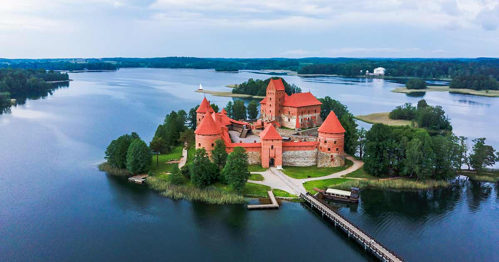

Trakai Island Castle (Lithuanian: Trakų salos pilis; Polish: Zamek w Trokach) is an island castle located in Trakai, Lithuania, on an island in Lake Galvė. The construction of the stone castle was begun in the 14th century by Kęstutis, and around 1409 major works were completed by his son Vytautas the Great, who died in this castle in 1430. Trakai was one of the main centers of the Grand Duchy of Lithuania and the castle held great strategic importance. The castle was rebuilt in the 1950s - 1960s by Lithuanian initiative, although it had received resistance from Soviet authorities. The Trakai History Museum was established after the reconstruction. [More info]
